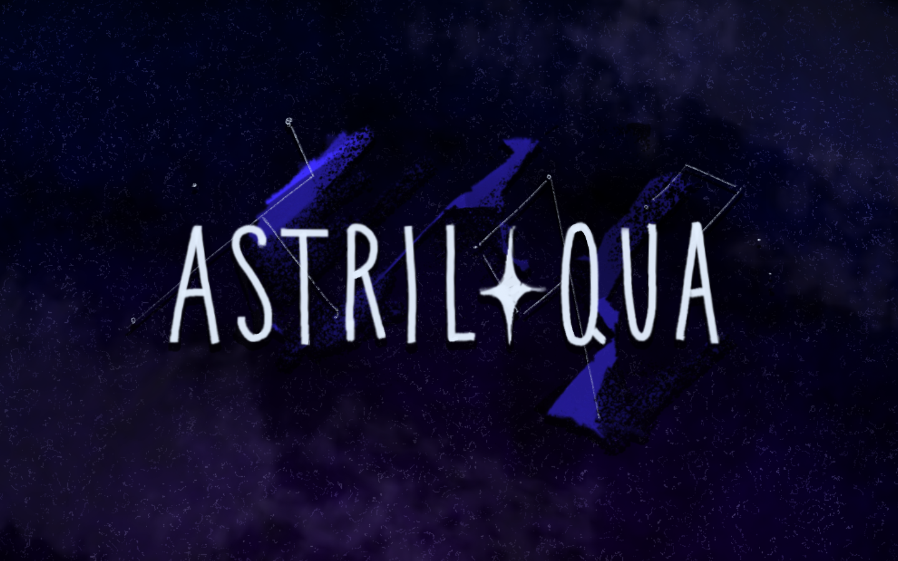

Rebuild the Stars
A small narrative adventure game about rebuilding the constellations.

Galaxy Shader
Created a subtly animated galaxy shader for the night sky inspired by abstract oil spill art with star lines.


Constellation Construction
Created system and VFX for building, recording, and deciphering player-built constellations.

Miscellaneous Programming
Created NPC system, branching dialogue, map assembly, interaction system, and coded player animation.